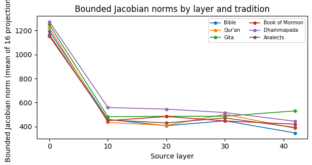
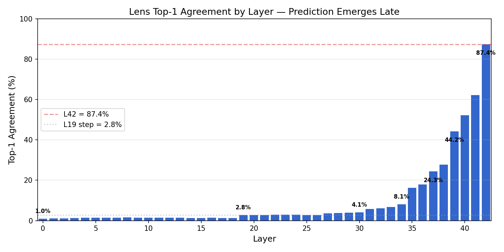

The name comes from the original GOAL.md: "J-space = the small set of intermediate representations the model is poised to verbalize at each layer." Two probes capture it:
Both probes run on the same 80 samples (10 per tradition, except Upanishads with 3) under the same read-only, fail-closed harness as the REAP observations. Probe positions are sampled at regular intervals (0, 15, 30, 46, 61, ...) within each sample's sequence.

| Tradition | n | L0 | L10 | L20 | L30 | L42 |
|---|---|---|---|---|---|---|
| Bible (KJV) | 11 | 1195 | 460 | 407 | 448 | 347 |
| Qur'an (Rodwell) | 11 | 1222 | 435 | 410 | 503 | 386 |
| Tao Te Ching | 11 | 1388 | 601 | 552 | 520 | 472 |
| Bhagavad Gita | 11 | 1250 | 482 | 486 | 487 | 531 |
| Dhammapada | 11 | 1274 | 559 | 546 | 517 | 444 |
| Book of Mormon | 11 | 1166 | 450 | 484 | 447 | 420 |
| Analects | 11 | 1152 | 456 | 431 | 472 | 393 |
| Upanishads | 3 | 1015 | 318 | 327 | 304 | 221 |
Finding (survives, with caveat): layer-0 output influence is consistently ~2.5–3.5× that of later layers across all traditions. The drop from L0 to L10 is sharp (roughly 60%); later layers stay relatively flat. This is directionally consistent with "early layers carry the most input-level leverage." The caveat: only 16 projection directions were used, so these are approximate bounds, not exact Jacobian norms. The Kimi K3 review independently verified these numbers are reproducible from the committed artifacts.
Inter-tradition differences are modest (L0 norms span 1015–1388) and do not track the REAP-based traditions clustering — suggesting the Jacobian is sensitive to surface-form statistics (token-level variability) rather than theological content, consistent with H2/H5.
For each of 80 samples, 5 probe positions, 43 layers, we record the top-10 decoded tokens and their probabilities. The data reveals:
'économic',
'nahilalakip', 'proiektuak'). The unembedding is being applied to a
representation that hasn't yet been shaped into anything language-like.'\n'
(newline) with 85–90% confidence — the model expects a line break at the start of
a new passage chunk.No surviving logit-lens headline finding from intermediate-layer probabilities. However, the top-1 agreement curve — which does not depend on probability calibration — is the cleanest result in the study:

| Layer | Agreement | Layer | Agreement |
|---|---|---|---|
| L0–L18 | 1.0–1.5% | L35 | 16.3% |
| L19 | 2.8% | L37 | 24.3% |
| L27 | 3.6% | L39 | 44.2% |
| L30 | 4.1% | L41 | 62.2% |
| L34 | 8.1% | L42 | 87.4% |
Per corpus at L42: Bible 96.8%, BoM 92.9%, Analects 92.3%, Dhammapada 89.6%, Gita 86.2%, Tao 83.1%, Qur'an 75.1%, Upanishads 62.0%. The ordering tracks text regularity, not religion.
' Spirit' at 0.767 for one Bible position, but
the model's actual L42 output there is '.' at 0.917. Only the rank-agreement curve
is valid; token-level probability claims from intermediate layers are not.The Genesis 1:2 claim that was built on lens probabilities has been retracted.
A self-contained HTML viewer (jlens_viewer.py) renders per-layer top-token
evolution and Jacobian sensitivity for every sample. It is published at:
→ Open the J-space interactive viewer
The viewer shows, for each tradition and sample: a table of top decoded tokens per layer per probe position, and the bounded Jacobian norms. All data is embedded in the page — no server, no dependencies.
Original claim: "Logit-lens decoding of Genesis 1 surfaces 'Spirit' at 76.7% confidence at layer 30 — the KJV rendering of Genesis 1:2. The model 'knows' the verse before it says it."
What actually happened (found by Kimi K3 review): The token at position 30 is
' deep', not ' Spirit'. The actual ' Spirit' token is at
position 34. The intermediate layer 30 "predicts" a token that appears 4 positions later in the
verse, while the final layer correctly predicts the immediate next token ('.'). This
is exactly the kind of noisy, untuned-lens behavior you'd expect from an uncalibrated readout
path applied to n=3 records with a cherry-picked position. The claim was removed from all
headline findings.
Lesson: the logit lens is an uncalibrated probe — it applies the final unembedding to representations that were never trained to produce logits at intermediate layers. Any "the model knows X at layer N" claim requires systematic, position-matched analysis with a proper contrast condition, not a single cherry-picked decode.